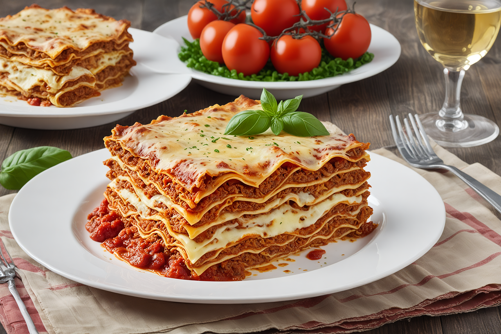

Italienische Lasagne
1 Std.
medium
15.12.2025
Zutaten für
| 300 g | Rindfleisch |
| 100 g | Speck gewürfelt |
| 300 g | Zwiebel |
| 80 g | Karotten |
| 250 g | Rotkohl |
| 500 g | Kloßteig |
| 200 g | Sahne |
| Salz und Pfeffer |
Zubereitung
ca. 1 Std.
Gesamtzeit ca. 2 Std.
-
Gemüse vorbereiten:
Möhren, Sellerie, Zwiebeln und Knoblauch schälen. Selleriegrün, Petersilie und Basilikum zufügen und fein hacken. -
Bolognesesauce kochen:
Hackfleisch krümelig anbraten, Gemüse zugeben, Rotwein hinzufügen und 1 Stunde köcheln lassen. -
Béchamelsauce zubereiten:
Butter schmelzen, Mehl einrühren, Milch zugeben und cremig kochen. Mit Salz und Muskat abschmecken. -
Lasagneplatten vorbereiten:
Nudelplatten ca. 6 Minuten kochen, abschrecken und abtropfen lassen. -
Lasagne schichten:
Bolognesesauce, Lasagneplatten, Béchamelsauce, Schinken und Käse schichten. -
Abschließen & backen:
Im Ofen bei 200 °C ca. 40 Minuten backen. -
Tipp:
Lasagneplatten können auch ungekocht verwendet werden.